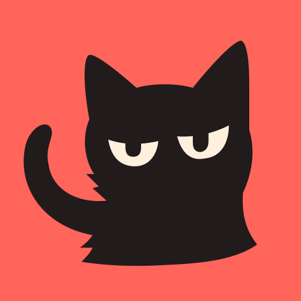
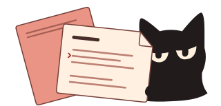

ReadReel
Локально
Мой сценарий
0 слов
00:00 чтения

Хранится на устройстве
Как включить прокрутку голосом
Откройте камеру и нажмите «Голос». При первом включении понадобится интернет, чтобы загрузить русскую модель и движок (около 51 МБ).
Настройки чтения
Открываю камеру…
9:16
Готов
00:00 / 00:00
0%
WPM